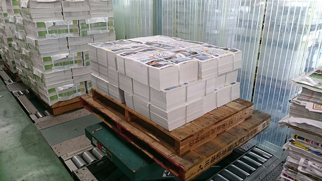
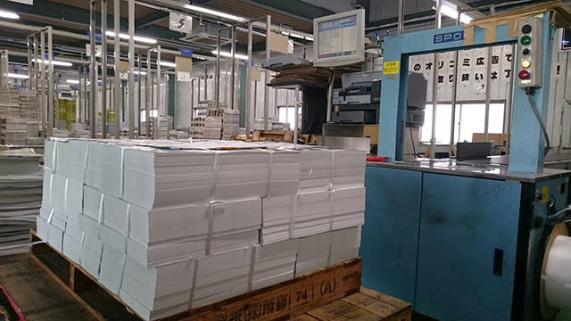

いよいよ今月26日（土）に迫った教育研究所アークス主催（塾クセジュ共催）「私立高校説明会」、皆さまお申し込みはお済みですか？
実は9/4に折込チラシを近隣に撒いたのですが、早速反響があり、お申込み頂いております。
ありがたいことです。
今回の私立高校説明会は昨年度よりもさらにパワーアップ！ 学校の先生方がお話される「生の情報」を我々高校入試のプロが細かく分析して、「分かりやすいイメージ」に再構成していきます。さらに、近年需要増加の一途をたどる都内の注目校をご招待。複雑きわまりない東葛地域の私立高校情報をスッキリ解り、さらに新しい志望校候補の情報も手に入れられるお得な一日です。
ぜひご参加ください。
さて今日は珍しい風景をご紹介！
折込をお任せしている担当さんが「これが集荷センターに到着した時の写真です」と、朝早くから私達のために“バーチャル社会見学”をメールで届くけてくださいました。
一同感動～！
私達のチラシはここから巣立ち、皆さまのお宅へ折り込まれるんですね。
普段はデータを作って印刷屋さんに送った以降は外で実物を見る機会がありませんので、大変興味深いです。
（これが3万部のチラシ！ 実物を見ると迫力があります。）
（フォークでパレットごと移動！）

（これから自動仕分システムに装填されます。）

（これから皆さまのご自宅に配送されます。）
朝日オリコミ茨城の皆さん、どうもありがとうございました。
必ず良い会にします！